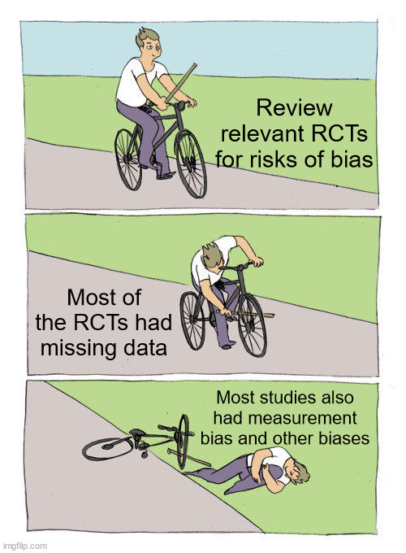
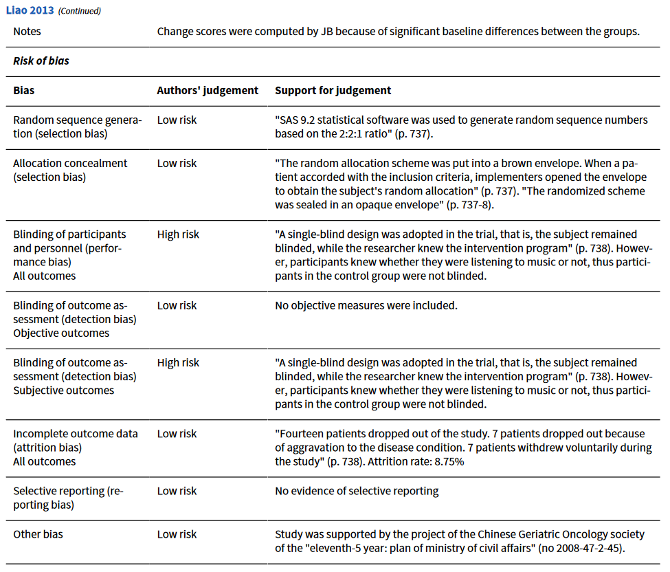
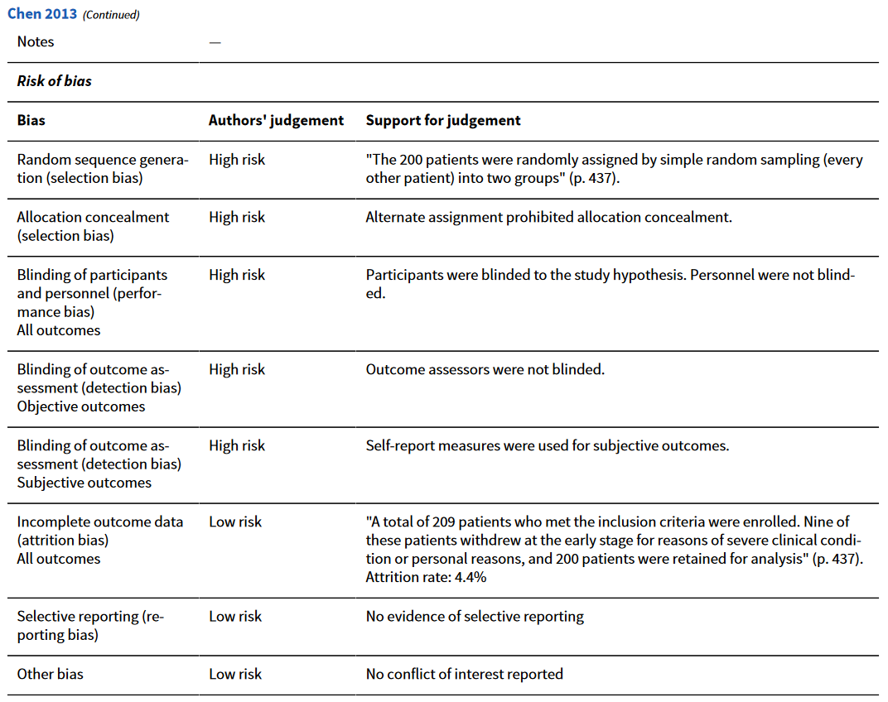
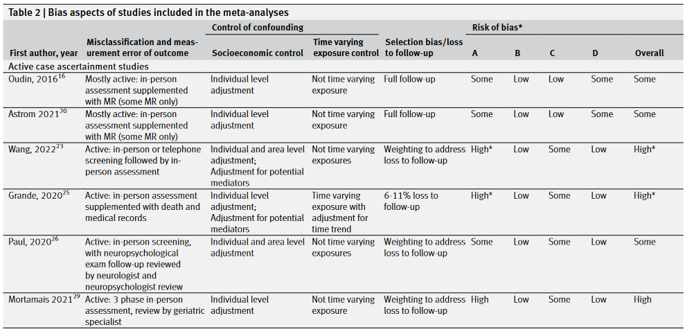
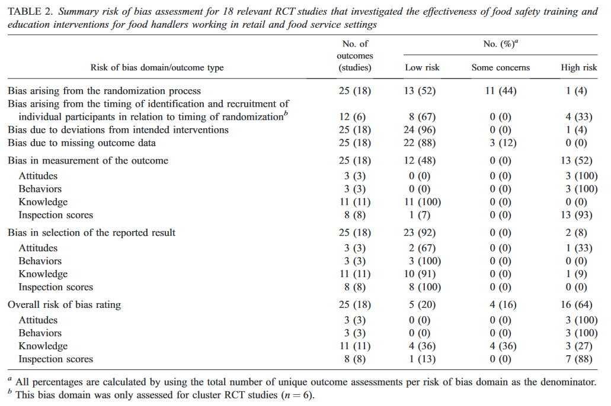
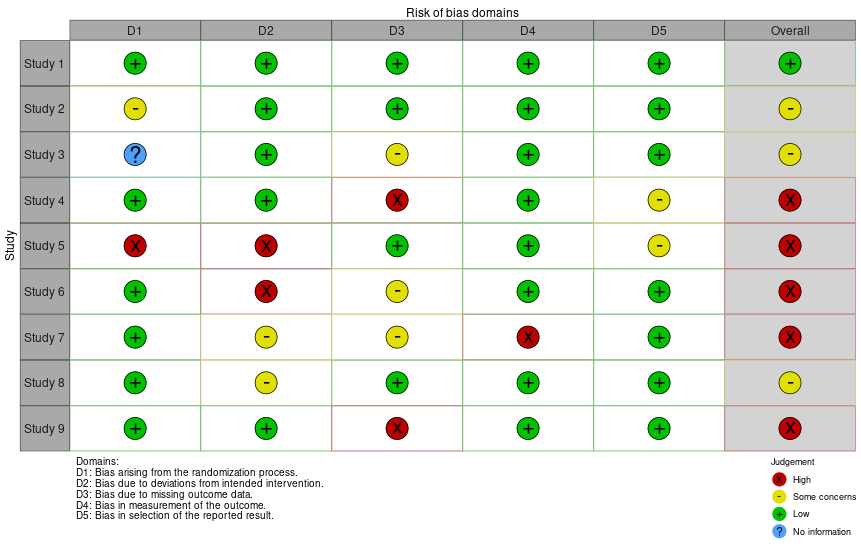

5 Risk-of-Bias Assessment
Systematic reviews must aim to assess the risk of bias in the included studies to determine the reliability of the results and possible impacts on measures of effect. Biases are defined as systematic errors that can lead to over- or under-estimation of the true measure of effect. In addition to biases within individual studies, there is another form of bias called non-reporting biases (e.g., publication bias), that relates to the result of meta-analysis and whether any important outcomes might be missing. Both forms of bias will be considered, with additional information about publication bias considered in the meta-analysis section (Chapter 9).

5.1 Risk of bias
There is strong evidence that certain study design features (e.g., lack of blinding in clinical studies, lack of allocation concealment) can lead to a higher risk of bias, which can affect the magnitude and direction of the results. Biases can be introduced into a study through different mechanisms. These can be classified into different domains, which form the basis for risk-of-bias assessment tools. Risk of bias should be assessment differently for each unique outcome in a review, because some domains (e.g., blinding) may be important for some outcomes (e.g., subjective measures) but less important for others (e.g., death).
Risk-of-bias assessments should use recommended, and ideally validated tools, and should be conducted by two independent reviewers, especially as judgement is frequently required in these assessments. Pilot testing of risk-of-bias assessment tools is important for all reviewers involved in a review (e.g., on 3-5 papers) to ensure criteria are applied consistently.
5.2 Cochrane Tool for RCTs
The Cochrane Collaboration has developed a structured, domain-based tool to assess risk of bias in RCTs (Sterne et al. 2019). The tool, called RoB 2, uses a series of signalling questions to determine the risk of bias within each domain. Questions are answered with options of “yes”, “probably yes”, “probably no”, “no”, and “no information”. There are also variations of the tool available for cluster-randomized trials and crossover trials. As noted above, the tool should be applied at the outcome level, so multiple assessments may be needed for a study if it reports multiple relevant outcomes.
Based on the results of the signalling questions, each domain will then receive a risk-of-bias judgement (or rating) of low, some concerns, or high. The tool includes flow charts to guide which judgement is most appropriate given the responses to the signalling questions. Each signalling question also contains a free-text box to record supporting information about the answer. Reviewers can copy and paste direct quotes from the article in this section to support their answers and add transparency. Optionally, reviewers can make a judgement about the likely direction of bias for each domain and overall, if this is possible to assess.
Once the risk of bias of each domain is assessed, an overall risk-of-bias judgement is made for the study-specific outcome. The overall risk judgement cannot be lower than the judgement assigned to any individual domain (e.g., if one domain is judged as “some concerns” and all others are “low risk”, then the overall risk must be at least “some concerns”).
One of the first decisions in applying this tool is determine whether you are interested in the effect of assignment to the interventions at baseline (i.e., intention-to-treat effect), or the effect of adhering to the interventions as specified in the protocol (i.e., per-protocol effect). The former is usually more important for occupational and public health reviews, as it reflects population-level realities of intervention administration.
5.2.1 RCT Bias Domains
Bias arising from the randomization process
This domain assesses whether intervention allocation process was random, and whether it was adequately concealed. Proper randomization is critical to mitigate the possibility of confounding bias. Randomization can be conducted in multiple different ways (e.g., simple, blocked, stratified, minimization). It is also important to prevent participants or trial personnel from knowing the next assignment (e.g., intervention or control), as this can enable selective enrollment. Baseline differences between intervention groups can be examined, and if identified (beyond what is expected by chance), suggest a problem with the randomization process.
Bias due to deviations from intended interventions
This domain assesses whether there were any important deviations from the intended interventions that could bias results. For example, if participants or trial personnel were not “blinded” to the intervention group status, this could affect certain outcomes (e.g., behaviours). If blinding was not conducted or not possible, the possibility that deviations arose because of the trial context should be considered. If so, whether these deviations could have affected the outcome should also be considered, including whether any deviations were balanced across groups. This domain also considers whether the analysis correctly followed intention-to-treat principles (assuming the interest is in the effect of assignment to interventions).
Bias due to missing outcome data
This domain assesses whether outcome data were available for all, or nearly all, of the trial participants. For continuous outcomes, data from at least 95% of participants will often be sufficient to mitigate missing data biases. For dichotomous outcomes, the proportion of acceptable missing data depends on the risk of the event. If missing data are a possible concern, we should look for evidence in the study that the result was not biased due to the missing data (e.g., bias-corrected analysis or sensitivity analysis). We can use additional information in the study to determine whether missing data could or likely depended on the true value of the outcome, including any differences between groups in missing data, reported reasons for missing data, and circumstances of the trial.
Bias in measurement of the outcome
This domain assesses the appropriateness of the method of measuring the outcome, whether the measurement method differed across intervention groups, and whether outcome assessors were blinded to the intervention group status of participants. It aims to determine if there were any differential measurement or misclassification errors. If outcome assessors were not blinded to group status, then it should be considered whether this knowledge could have influenced their assessment.
Bias in selection of the reported result
This domain assesses whether the result reported in the study is likely to have been selected from multiple outcome measurements or multiple analyses (e.g., due to being statistically significant). Assessors should consider whether the trial was analyzed in accordance with a pre-specific analysis plan (e.g., published protocol). Evidence of selecting reporting should be examined, including reporting only one or a subset of multiple instruments, scales, time points, or analyses.
An example of the outcome-specific risk-of-bias assessment results for two studies from a systematic review of music interventions to improve various health outcomes in people with cancer is shown below (Bradt et al. 2021). In this review, separate assessments were made for objective (e.g., blood pressure) and subjective (e.g., self-reported anxiety) outcomes.


Consider the Young et al. (2019) systematic review about the effectiveness of food handler training interventions. Using two example RCT articles from that review, conduct a risk-of-bias assessment using the Cochrane RoB tool with the templates provided. For the Mancini et al. article, the outcome to assess is food inspection scores, while for Richard et al., the relevant outcome is food safety knowledge.
- What is your risk-of-bias judgement for each domain?
- What is your overall risk-of-bias judgement for each study?
5.3 Non-Randomized and Observational Study Designs
Non-randomized studies may be important to include in reviews of the effects of interventions. For example, population-level interventions (e.g., legislation changes) and investigations of long-term or rare outcomes are often more feasible to investigate in non-randomized studies than RCTs. Non-randomized intervention studies often have at a higher risk of bias than RCTs due to the lack of randomization and other study features. The Cochrane Collaboration has developed a special risk-of-bias tool called ROBINS-I to evaluate risks of bias in non-randomized studies.
Observational studies are critical to answer questions about exposures and health outcomes. For these types of questions, RCTs are often not feasible or ethical to conduct, and they suffer other limitations (e.g., shorter follow-up times). An international collaboration has developed a risk-of-bias assessment tool for observational studies in exposure/risk factor reviews, called ROBINS-E. ROBINS-E is based on the same framework and approach as the Cochrane RoB tool and ROBINS-I. We will consider how to apply this tool below. However, it is designed for cohort studies, so for reviews that focus on other designs (e.g.., case-control studies), other tools may be needed.
5.3.1 ROBINS-E Tool
One of the first steps in using the ROBINS-E tool is to pre-specify important confounding factors that are likely to influence the association between the exposure and outcome of interest. These will be specified for each outcome in each study and details recorded in Part E. The outcome of interest is first identified (Part A), then studies are screened to assess if they are at very high risk of bias (Part B), which would avoid the need for a detailed assessment. This involves answering key questions from the tool about whether confounding was controlled for and may be a concern, and whether the method of measuring exposure and outcome was inappropriate.
For each study, details of the participants, exposure, and outcome are extracted (Part C). Then the causal effect estimated by the study must be specified (Part D). This represents the target effect assuming no potential for confounding (e.g., target experiment). Bias risks are then assessed across seven domains using signalling questions (Part E), and an overall risk judgement is also determined. Risks of bias in each domain is assessed as low, some concerns, high, or very high. The predicted direction of bias and whether it may threaten conclusions is also assessed for each outcome.
There is a spreadsheet version of the tool online you can download and use to help complete the risk-of-bias assessments.
5.3.1.1 ROBINS-E Domains
Risk of bias due to confounding
Confounding occurs when there are common causes of the exposure and outcome of interest. This domain assesses whether the study appropriately measured and controlled for all of the important confounding factors. Common control methods include stratification, matching, regression, standardization, or inverse probability weighting. This domain also assesses whether any post-exposure variables were controlled for in the analysis, which can introduce bias. If time-varying confounding is also a concern, additional questions are used to assess the impact of this bias. Time-varying confounding occurs when the exposure changes over time and prognostic factors affect exposure status during the exposure time period.
Even if all important confounders were identified and adjusted for in analysis, there is always a possibility for uncontrolled confounding. This could be due to unmeasured factors, imprecise measurement of confounding factors, or measured confounding factors were not adjusted for in the analysis. Therefore, there will always be some concerns about uncontrolled confounding even with a low risk judgement.
Risk of bias arising from measurement of the exposure
This domain addresses the risk of possible measurement error (continuous variables) or misclassification (categorical variables). Different variants of this domain are used depending on whether there are multiple measures of the exposure over time and how those measurements are used in the analysis. This domain considers how well the exposure variable represents the target exposure of interest, whether the exposure was likely to be measured with error (or was misclassified), and whether any measurement errors or misclassification could have been differential (i.e., related to the outcome or risk of outcome). An example of differential error is recall bias in case-control studies.
Risk of bias in selection of participants into the study
This domain assesses possible selection bias, where some participants, follow-up time of some participants, or some outcome events are excluded in a way that leads to an association between the exposure and outcome. Questions assess whether selection was based on characteristics observed after the start of the exposure window, and whether these characteristics were related to both the exposure and outcome. Questions also assess whether follow-up began at or close to the start of the exposure window, and whether the exposure is likely to be constant over time. Methods of analysis to correct for potential selection biases are also considered.
Risk of bias due to post-exposure interventions
This domain considers whether the exposure leads to administration of interventions that can alter the exposure-outcome relationship. For example, in a study of individuals exposed to asbestos, the most highly exposed were more likely to receive a CT scan, which could affect their risk of lung cancer mortality. If no interventions are administered to alleviate the effects of the exposure, there should be no issues with this domain.
Risk of bias due to missing data
This domain assesses risks of missing data for exposures, outcomes, or confounding variables, and whether this led to bias. The approach to analysis is considered in making this assessment (complete case analysis or multiple imputation).
Risk of bias arising from measurement of the outcome
This domain assesses risks of non-differential or differential measurement errors in the outcome. It considers if measurements could have differed by group, whether outcome assessors were aware of participants’ exposure history, and whether this could have affected the outcome measurement.
Risk of bias in selection of the reported result
This domain assesses selective reporting of the exposure and outcome (from multiple measurement methods), the results (from multiple analysis methods), and the participants (from a larger cohort). Unlike RCTs, it is unlikely that pre-specified analysis plans are available to compare with a study’s results, and clues often must be gained from comparing the methods and results sections.
A systematic review and meta-analysis of the association between ambient air pollution and clinical dementia used the ROBINS-E tool to assess risk of bias in relevant studies (Wilker, Osman, and Weisskopf 2023). A total of 51 relevant studies were included. Results of the ROBINS-E assessment were summarized in a table. The first several studies of this summary table are shown below:

In this table, an asterisk (*) Indicates that the likely direction of bias would be towards the null. The table legend is as follows: A = Confounding; B = Post-exposure intervention; C = Missing data; D = Measurement of the outcome. All studies were rated as some concerns in the domains of “Measurement of the exposure” and “Selection of reported results”, all studies were rated as “Low risk” in the “Selection of participants” domain.
5.3.2 Other Risk-of-Bias Tools
There are various other risk-of-bias tools that have been developed and applied to different study designs. However, not all of these tools have been validated, and some use outdated methods (e.g., scoring systems). For reviews of interventions, the Cochrane Collaboration tools are highly recommended. For reviews of exposures, the ROBINS-E tool is recommended if the predominant design is cohort studies. For other types of reviews, the JBI Critical Appraisal Tools are recommended. For example, JBI has developed critical appraisal tools for:
- Analytical cross-sectional studies
- Case-control studies
- Case reports and case series
- Prevalence studies
- Qualitative research
- Text and opinion articles
- Economic evaluations, and many others.
We will practice using the ROBINS-E tool on two studies that were included in the systematic review of the association between green spaces and mortality (Rojas-Rueda et al. 2019). The two articles and spreadsheet templates are available in the following shared folder.
For the purposes of this exercise, consider confounders of interest to be any of the following socio-economic factors: age, sex, ethnicity, marital status, education, income, and employment .
- What is your risk-of-bias judgement for each domain?
- What is your overall risk-of-bias judgement for each study?
5.4 Risk-of-Bias for Missing Data
The risk-of-bias tools covered above include an item to assess possible risks from selective reporting of results when multiple measurements or analyses were made. In cases where the result for an outcome is omitted entirely, the risk of bias should be assessed at the overall synthesis level. A new risk-of-bias tool called ROB-ME has been developed to assess these factors at the synthesis level (Page et al. 2023). The tool uses the following process to assess possible biases due to missing data in a meta-analysis:
- Select syntheses that will be assessed for risk of missing data.
- Determine which studies that are eligible for the synthesis have missing results.
- Consider the potential for missing studies across the systematic review.
- Assess risk of bias due to missing evidence in each meta-analysis.
This process aims to first determine if any studies might have measured relevant results for a synthesis, but did not report them at all or in a format usable for the synthesis (e.g., meta-analysis). This is especially important if the results were not reported because they were not statistically significant or did not support the authors’ hypotheses (e.g., results with null findings not reported in a study). This process may involve checking a study’s protocol (if published), methods, analysis plan, or other supporting documents.
5.5 Reporting Risk-of-Bias Results
Risk-of-bias summary tables or figures should be provided in the systematic review report. A table or plot should be included that contains the risk-of-bias judgement for each domain for each study outcome, or this data can be made available in the supplementary materials if there are many included studies. In that case, it can be useful to provide a summary table in the manuscript text. An example from Young et al. (2019) is shown below. Additionally, the domain-specific judgements or overall judgement can also be included alongside each study in meta-analysis forest plots.

There is an online R Shiny App called robvis that can be used to create high-quality risk-of-bias figures for the Cochrane Collaboration risk-of-bias tools. The app contains template spreadsheets that can be altered with your risk-of-bias results, which are then uploaded to create a Cochrane-style risk-of-bias plot as per below.

The risk-of-bias results should be incorporated into the summary assessment for each outcome in a review. For example, if conducting meta-analysis, a subgroup analysis (Chapter 9) could be conducted to examine differences in measures of effect for studies at different risks of bias. Alternatively, the analysis could be restricted to only studies at low risk of bias, but if this is done, a sensitivity analysis should be conducted to compare the results with those including all of the studies. If all studies are included, the summary risk of bias should be incorporated into a certainty of evidence assessment (Chapter 10) (e.g., certainty of evidence would be lowered if many studies have bias concerns).